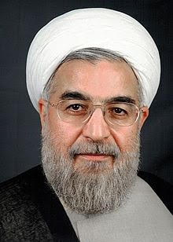

Hassan Rouhani
Hassan Rouhani is the President of Iran. He was born in Sorkheh, Iran, on November 12th, 1948. Hassan had began studying religion as a kid. In 1969, he attended to the University of Tehran and graduated with a Bachelor’s degree. He later went back to school in the 90s to earn a Master's degree and a Ph.D. from Glasgow Caledonian University in Scotland. After school, he became a cleric.
Later on in life, he became the secretary of the Supreme National Security Counsel and held that position for 16 years. After the election of Mahmoud Ahmadinejad, he resigned from being secretary. Then in 2013, he ran for president promising that if he won he would, “Prepare a civil rights charter.” Hassan Rouhani won that election and is still the President of Iran.